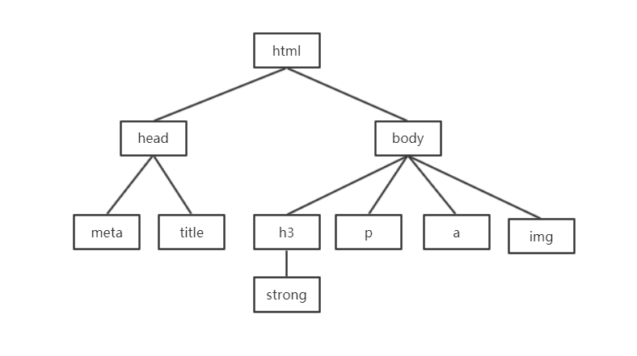
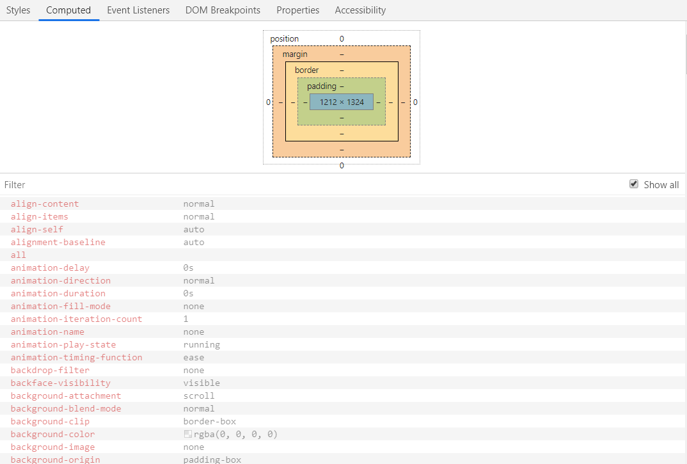
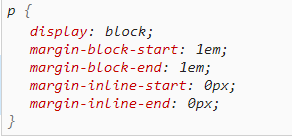
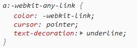
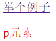

一、页面是如何渲染的？
- 一个元素一个元素依次渲染，顺序按照页面文档的树形目录结构进行
- 页面文档的树形目录结构.

- 渲染每个元素的前提条件：该元素所有CSS属性必须全部有值，一个CSS属性没有值都不行
- 一个属性的全部属性值可以通过浏览器找到，Computed：表示计算过后

二、属性值计算过程
- 一个元素 从所有属性都没有值到所有属性都有值 这个计算过程叫属性值计算过程
1.确定声明值 3.使用继承 |
- 具体说明
确定声明值：参考样式表（作者样式表、浏览器样式表）中没有冲突的声明，作为CSS属性值。
层叠冲突：对样式表中有冲突的声明使用层叠规则，确定CSS属性值。
使用继承：对仍然没有值的属性，若可以继承，则继承父元素的值。
使用默认值：对仍然没有值的属性，使用默认值
三、两个特殊的CSS取值
inherit：手动继承（强制继承），将父元素的值取出应用到该元素上
initial：初始值，将该属性设置为默认值
四、练习：为什么p元素可以继承 a元素不行
<style> |
- p元素
p元素的参考演示表

确定声明值：没有color属性
层叠冲突：没有color属性
使用继承：继承自父元素div的color属性，所以显示的颜色是红色
使用默认值
- a元素
a元素的参考演示表

- 确定声明值：a元素参考样式表中color属性有值，没有发生冲突，所以color属性的值此时已经确定，就是浏览器默认的值，所以层叠冲突、使用继承、使用默认值时不需要再计算color元素
- 网页运行效果
